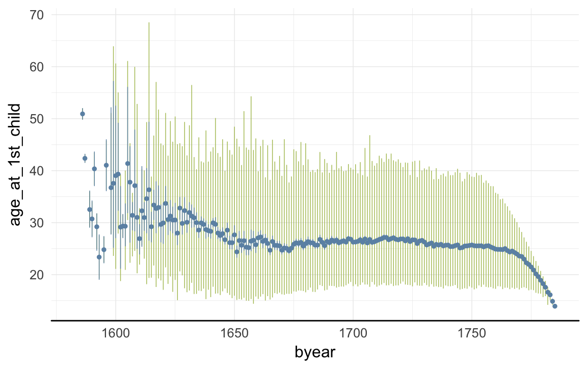
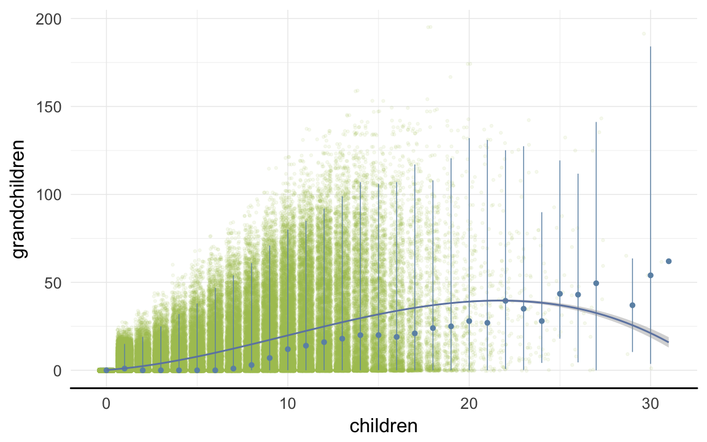

Loading details
source("0__helpers.R")
opts_chunk$set(render = pander_handler, cache=F,tidy=FALSE,autodep=TRUE,dev='png',fig.width=12,fig.height=7.5, warning = F, message = F)
load("rpqa.rdata")
rpqa = data.table(rpqa); rpqa.1 = data.table(rpqa.1)
desc_theme = theme_minimal(base_size = 24) + theme( axis.line.y = element_blank(), axis.line.x = element_line(size = 1, color ="black"))
update_geom_defaults("bar", list(fill = "#6c92b2", alpha = 1/2))
demo_trends = aggDemoTrends(rpqa)
mymin = theme_minimal() +theme(panel.grid.major.y =element_blank(),panel.grid.major.x = element_line(colour="#eeeeee"))
rpqa[, paternalage := 10 * paternalage]
rpqa[, maternalage := 10 * maternalage]
rpqa[, age := 10 * age]
rpqa[, age_at_1st_child := 10 * age_at_1st_child]
rpqa[, age_at_last_child := 10 * age_at_last_child]
rpqa[, byear := year(bdate)]
rpqa.1[, paternalage := 10 * paternalage]
rpqa.1[, maternalage := 10 * maternalage]
rpqa.1[, age := 10 * age]
rpqa.1[, age_at_1st_child := 10 * age_at_1st_child]
rpqa.1[, age_at_last_child := 10 * age_at_last_child]
rpqa.1[, byear := year(bdate)]
Missingness patterns
The first table shows the number of missings per variable, the second table, using the indexes from the first, shows missings in which variables tend to occur together. Most variables of interest in this study are derived from these dates and so these patterns can show many cases did not have the data to calculate e.g. paternal loss (those lacking either the father’s death date, the anchor’s birth date or both).
pander_escape(missingness_patterns(rpqa[, list(
bdate, ddate, bdate.Father, ddate.Father, bdate.Mother, ddate.Mother
)]))
## index col missings
## 1 ddate 214777
## 2 ddate.Mother 139108
## 3 ddate.Father 131403
## 4 bdate.Father 57833
## 5 bdate.Mother 54978
## 6 bdate 31906
| ___________ |
166503 |
_ |
| 1__________ |
102985 |
ddate |
| 1_2________ |
28009 |
|
| 1_2_3_4_5_6 |
24048 |
|
| 1_2_3______ |
22747 |
|
| ____3______ |
21009 |
ddate.Father |
| __2________ |
19750 |
ddate.Mother |
| 1___3______ |
17574 |
|
| __2_3_4_5__ |
13719 |
|
| __2_3______ |
11033 |
|
| 1_2_3_4_5__ |
6846 |
|
| __2_3_4_5_6 |
2697 |
|
| ____3_4____ |
2465 |
|
| 1_2_3_4____ |
2198 |
|
| 1_2_____5__ |
2155 |
|
| 1___3_4____ |
2129 |
|
| 1_________6 |
1821 |
|
| 1_2_3___5__ |
1819 |
|
| __________6 |
1678 |
bdate |
| ______4____ |
1131 |
bdate.Father |
| __2_3_4____ |
1068 |
|
| ________5__ |
985 |
bdate.Mother |
| __2_____5__ |
976 |
|
| __2_3___5__ |
697 |
|
| 1_____4____ |
648 |
|
| 1_______5__ |
532 |
|
| __2_______6 |
251 |
|
| ____3_____6 |
249 |
|
| 1_2___4____ |
216 |
|
| 1___3_____6 |
212 |
|
| 1_2_______6 |
181 |
|
| __2_3_____6 |
154 |
|
| 1___3_4___6 |
146 |
|
| __2___4____ |
138 |
|
| 1_2_3_____6 |
114 |
|
| ____3___5__ |
96 |
|
| 1___3___5__ |
95 |
|
| 1_2_3_4___6 |
67 |
|
| ____3_4___6 |
63 |
|
| 1_2_____5_6 |
52 |
|
| 1___3_4_5__ |
42 |
|
| 1_2___4_5__ |
39 |
|
| 1_2_3___5_6 |
33 |
|
| ____3_4_5__ |
33 |
|
| __2___4_5__ |
30 |
|
| __2_3_4___6 |
28 |
|
| 1_____4___6 |
18 |
|
| ______4___6 |
17 |
|
| 1_______5_6 |
14 |
|
| 1_____4_5__ |
13 |
|
| __2_____5_6 |
12 |
|
| __2_3___5_6 |
11 |
|
| ________5_6 |
9 |
|
| 1_2___4_5_6 |
8 |
|
| 1_2___4___6 |
8 |
|
| 1___3_4_5_6 |
8 |
|
| ______4_5__ |
5 |
|
| __2___4___6 |
3 |
|
| ____3___5_6 |
2 |
|
| __2___4_5_6 |
1 |
|
| ____3_4_5_6 |
1 |
|
Reproductive timing
ggplot(data = demo_trends) +
geom_line(aes(x= Year, y = first, linetype = "first", colour = Parent), size = 1) +
geom_line(aes(x = Year, y = all, linetype = "all", colour = Parent), size = 1) +
geom_line(aes(x= Year, y = last, linetype = "last", colour = Parent),size = 1) +
scale_colour_manual(values = c(Father = "#6c92b2", Mother = "#aec05d")) +
scale_linetype_manual("Birth", breaks = c("last", "all","first"), values = c( "solid","dashed", "dotted")) +
scale_y_continuous("Parental age at birth") +
xlim(1650,NA) +
geom_text(aes(x = Year, y = all + 0.5,
label = ifelse(Year %% 15 == 0, round(all), NA))) +
facet_wrap(~ Parent) +
desc_theme + theme(legend.position = c(1,1),
legend.justification = c(1,1),
legend.box = "horizontal",
panel.margin = unit(2, "lines"))

Correlations between variables
round(cor(rpqa[, list(
paternalage, maternalage, birthorder, nr.siblings, children, grandchildren, byear, byear.Father, age_at_1st_child, age_at_last_child
)], use = "pairwise.complete.obs"),2)
| paternalage |
1 |
0.63 |
0.61 |
0.21 |
-0.01 |
0.02 |
-0.05 |
-0.31 |
0.03 |
0.02 |
| maternalage |
0.63 |
1 |
0.72 |
0.17 |
-0.04 |
-0.04 |
0.05 |
-0.11 |
0.01 |
-0.02 |
| birthorder |
0.61 |
0.72 |
1 |
0.59 |
-0.07 |
-0.06 |
0.11 |
-0.1 |
-0.07 |
-0.06 |
| nr.siblings |
0.21 |
0.17 |
0.59 |
1 |
0.02 |
-0.02 |
-0.02 |
-0.18 |
-0.11 |
-0.1 |
| children |
-0.01 |
-0.04 |
-0.07 |
0.02 |
1 |
0.61 |
-0.44 |
-0.43 |
-0.17 |
0.7 |
| grandchildren |
0.02 |
-0.04 |
-0.06 |
-0.02 |
0.61 |
1 |
-0.49 |
-0.46 |
-0.06 |
0.41 |
| byear |
-0.05 |
0.05 |
0.11 |
-0.02 |
-0.44 |
-0.49 |
1 |
0.96 |
-0.2 |
-0.45 |
| byear.Father |
-0.31 |
-0.11 |
-0.1 |
-0.18 |
-0.43 |
-0.46 |
0.96 |
1 |
-0.12 |
-0.44 |
| age_at_1st_child |
0.03 |
0.01 |
-0.07 |
-0.11 |
-0.17 |
-0.06 |
-0.2 |
-0.12 |
1 |
0.47 |
| age_at_last_child |
0.02 |
-0.02 |
-0.06 |
-0.1 |
0.7 |
0.41 |
-0.45 |
-0.44 |
0.47 |
1 |
ggplot(data=rpqa, aes(x = byear, y = paternalage)) +
geom_linerange(stat = "summary", fun.data = "median_hilow", colour = "#aec05d") +
geom_pointrange(stat = "summary", fun.data = "mean_cl_boot", colour = "#6c92b2") +
desc_theme
ggplot(data=rpqa, aes(x = byear, y = age_at_1st_child)) +
geom_linerange(stat = "summary", fun.data = "median_hilow", colour = "#aec05d") +
geom_pointrange(stat = "summary", fun.data = "mean_cl_boot", colour = "#6c92b2") +
desc_theme

ggplot(data=rpqa, aes(x = byear, y = age_at_last_child)) +
geom_linerange(stat = "summary", fun.data = "median_hilow", colour = "#aec05d") +
geom_pointrange(stat = "summary", fun.data = "mean_cl_boot", colour = "#6c92b2") +
desc_theme

ggplot(data=rpqa, aes(x = byear, y = children)) +
geom_linerange(stat = "summary", fun.data = "median_hilow", colour = "#aec05d") +
geom_pointrange(stat = "summary", fun.data = "mean_cl_boot", colour = "#6c92b2") +
desc_theme

ggplot(data=rpqa, aes(x = byear, y = survive1y)) +
geom_pointrange(stat = "summary", fun.data = "mean_cl_boot", colour = "#aec05d") +
desc_theme

ggplot(data=rpqa, aes(x = byear, y = surviveR)) +
geom_pointrange(stat = "summary", fun.data = "mean_cl_boot", colour = "#aec05d") +
desc_theme

ggplot(data=rpqa, aes(x = children, y = grandchildren)) +
geom_jitter(colour = "#aec05d", alpha = I(0.1)) +
geom_pointrange(stat = "summary", fun.data = "median_hilow", colour = "#6c92b2") +
geom_smooth(method = "glm", formula = y ~ poly(x,3), colour = "#6e85b0") +
desc_theme

ggplot(data=rpqa, aes(x = children, y = children.surviving5y)) +
geom_jitter(colour = "#aec05d", alpha = I(0.1)) +
geom_pointrange(stat = "summary", fun.data = "median_hilow", colour = "#6c92b2") +
geom_smooth(method = "glm", formula = y ~ poly(x,3), colour = "#6e85b0") +
desc_theme
ggplot(data=rpqa, aes(x = round(age), y = children)) +
geom_jitter(colour = "#aec05d", alpha = I(0.1)) +
geom_pointrange(stat = "summary", fun.data = "mean_cl_boot", colour = "#6c92b2") +
geom_smooth(colour = "#6e85b0") +
xlab("Age") +
ylab("Number of children") +
desc_theme
ggplot(data=rpqa[children>0,], aes(x = round(age), y = children)) +
geom_jitter(colour = "#aec05d", alpha = I(0.1)) +
geom_pointrange(stat = "summary", fun.data = "mean_cl_boot", colour = "#6c92b2") +
geom_smooth(colour = "#6e85b0") +
xlab("Age") +
ylab("Number of children") +
desc_theme

plot_zero_infl(rpqa[ spouses > 0, ]$children)

ggplot(data=rpqa, aes(x = paternalage.factor, y = survive1y)) +
geom_pointrange(stat = "summary", fun.data = "mean_cl_boot", colour = "#aec05d") +
desc_theme

ggplot(data=rpqa[spouses > 0, ], aes(x = paternalage.factor, y = children)) +
geom_pointrange(stat = "summary", fun.data = "mean_cl_boot", colour = "#aec05d") +
desc_theme
Opportunities for selection
rpqa.1$birth.decade = round(rpqa.1$byear/5)*5
episodes = rpqa.1 %>%
filter(!is.na(male) | !is.na(survive1y) | !is.na(ever_married)) %>%
group_by(birth.decade) %>%
summarise(
"Population size" = as.numeric(length(idIndividu)),
"0. Number of children" = ifelse(between(birth.decade, 1670,1750), cva(children), NA_real_ ),
"1. Surviving first year" = ifelse(between(birth.decade, 1670, 1755),cva_bin(survive1y), NA_real_ ),
"2. Surviving to 15" = ifelse(between(birth.decade, 1670,1735), cva_bin(surviveR[survive1y==T]), NA_real_ ),
"3. Ever married" = ifelse(between(birth.decade, 1670,1720), cva_bin(ever_married[surviveR==1]), NA_real_ ),
"4. Number of children" = ifelse(between(birth.decade, 1670,1750), cva(children[ever_married==1]), NA_real_ ),
"5. Grandchildren" = ifelse(between(birth.decade, 1670,1670), cva(grandchildren[children>0]), NA_real_ )
) %>%
# mutate(male = Recode(male, "'NO'='female';''='male'")) %>%
data.table()
data.frame(episodes[order(birth.decade), ], check.names = F)
| 1670 |
1362 |
1.16 |
0.3481 |
0.206 |
0.4818 |
0.5963 |
0.7589 |
| 1675 |
2575 |
1.152 |
0.2827 |
0.2802 |
0.4755 |
0.5918 |
NA |
| 1680 |
2598 |
1.194 |
0.3456 |
0.3456 |
0.492 |
0.5668 |
NA |
| 1685 |
2621 |
1.225 |
0.4315 |
0.3557 |
0.4831 |
0.5743 |
NA |
| 1690 |
3072 |
1.186 |
0.4459 |
0.3217 |
0.489 |
0.5675 |
NA |
| 1695 |
3793 |
1.152 |
0.3861 |
0.3186 |
0.4767 |
0.5889 |
NA |
| 1700 |
5025 |
1.232 |
0.4737 |
0.3785 |
0.477 |
0.5806 |
NA |
| 1705 |
5181 |
1.184 |
0.4266 |
0.3267 |
0.4665 |
0.604 |
NA |
| 1710 |
5771 |
1.219 |
0.4166 |
0.3762 |
0.4767 |
0.6196 |
NA |
| 1715 |
6337 |
1.314 |
0.5281 |
0.3753 |
0.4776 |
0.6222 |
NA |
| 1720 |
7184 |
1.246 |
0.447 |
0.3729 |
0.4605 |
0.6389 |
NA |
| 1725 |
8520 |
1.373 |
0.4917 |
0.4278 |
NA |
0.669 |
NA |
| 1730 |
10200 |
1.55 |
0.5842 |
0.4982 |
NA |
0.6784 |
NA |
| 1735 |
11112 |
1.463 |
0.5627 |
0.3746 |
NA |
0.696 |
NA |
| 1740 |
4544 |
1.386 |
0.5384 |
NA |
NA |
0.6639 |
NA |
save(episodes, file = "coefs/rpqa_episodes.rdata")
# rpqa.1 = merge(rpqa.1, episodes, by = "birth.decade", all.x = T)
(episodes.plot = ggplot(melt(episodes,id.vars=c('birth.decade'), na.rm = T)) + geom_line(aes(x=birth.decade, y=value)) + facet_wrap(~ variable,scales='free_y',ncol = 1)) + mymin